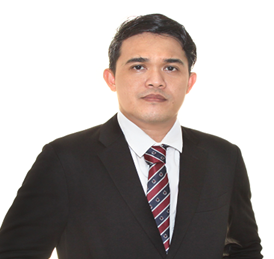

Charles Bismarck Q. Bermoy

Summary
Professional Electronics Engineer (Philippines) with 14 years’ experience in hardware development of WLAN products, designing and testing, RF Propagation and Optimization. Lead projects, Technical knowledge of Embedded operating systems and Networking protocols Familiarity with operation of Vector Network Analysers and Spectrum Analysers, Schematic creation and PCB layout, Failure Analysis Board Level and Firmware Debug, Factory process and manufacturing, Infrastructure, Video Surveillance System, Create/update documentation after resolution of issues Testing RF hardware devices, Testing & Commissioning and Site-Survey.
Education
Bachelor of Science in Electronics and Communications Engineering - Cebu Institute of Technology-University (1999-2004)
Work Experience
-
RF Failure Analysts (TETRA-Terrestrial Trunked Radio) - Motorola Sdn. Bhd., Pulau Penang, Malaysia
July 2007 - July 2010
- Take the Lead as RF Analyst of TETRA Technology product to make critical analysis and technical evaluation for ongoing production.
- Doing Debugging of current product that is prime units failed on the front end production.
- Working with coordination of front-end supervisors, production manager and group leader for important feedback to be taken.
- Doing Technical analysis, engineering evaluation, design issues evaluation and New Product Introduction of TETRA Product
- Working hand in-hand with R&D Engineers and Engineering Department to tackle the problem about the current issues for design and process in production.
- Working as Failure analyst for Design parameter and specification using different method and procedure with the help of advance test equipment and instruments such as Spectrum Analyzer, Signal Generator, Oscilloscope, Modulation Analyzer, and Frequency Counter.
Senior RF and Hardware Engineer, R&D - RF NET TECHNOLOGIES PTE. LTD., Singapore
July 2010 - Present
- PCBA designing and schematic layout using PADS layout from Mentor Graphics, Gerber and SMT files capture for manufacturability.
- Participate product setup and debugging during EMC test(Radiated Emission, Power Supply Test, Radiated Immunity, CE, Conducted Immunity, Electrical Fast Transient, Surge and ESD).
- Worked with management to transfer RF designs to production.
- Designed, developed, and tested RF systems using various test measurement equipment such as R&S CMW 500, IQview tester, Spectrum Analyzer, Power Meter, Attenuator Switch and Vector Network Analyzer.
- Knowledge of using different test software tools such as VxWorks, Atheros Radio Test tools and QDART(Qualcomm development acceleration resource toolkit).
- Coordinated with Test team to identify faults and to perform debugging, system verification and validation.
Skills
- RF communication system design and analysis
- PCB layout design with Mentor Graphics
- Electronic circuit repair and troubleshooting
- Soldering
- Python programming
- Knowledge in TCP/IP Networking
- MATLAB and Vx Works and Batch file scripting.
- CCTV and Surveillance system design
- Hands on experienced in Litepoint IQview tester(Bluetooth and WLAN tester) and R&S
CMW500 Wideband Communication tester
Awards and Certifications
- Professional Electronics Engineer (Professional Regulation Commission, Philippines), Licensed No. 0001440
- ASEAN Engineer (ASEAN FEDERATION OF ENGINEERING ORGANIZATION)
- IECEP Singapore- Vice Governor Internal (April 2022 – present)
- Certified Lean Six Sigma Yellow Belt
Other